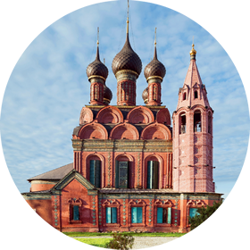

Церковь Богоявления
|

фотографии
|
план храма
|
Завершить знакомство с ярославскими посадскими храмами XVII века можно рядом со Спасским монастырём, там, где мы начали нашу прогулку, в краснокирпичной церкви Богоявления, стоящей прямо у его стен. Церковь была построена на излёте золотого века ярославской архитектуры, в 1684–1693 годах, расписана в одно лето 1692 года на средства купца Алексея Зубчанинова. К сожалению, до наших дней летописные фрагменты стенописи, подобные тем, что мы видели в других церквях, здесь не сохранились, но они были зафиксированы во второй половине XIX века. Богоявленская церковь раз в год, во время праздника Крещения, становилась главным городским храмом, центром всего праздника. Два придела были освящены в честь Дмитрия Прилуцкого (южный) и в воспоминание Страшного суда Христова (северный; уникальный пример такого посвящения в русской архитектуре).
Церковь, стоящая на небольшом «островке» на пересечении улиц, в том числе и древней дороги, ведущей в Москву, напротив моста через Которосль, не раз оказывалась в гуще исторических событий. В частности, она сильно пострадала при белогвардейском восстании в городе в 1918 году. Южный придел храма, служивший одновременно и зимней церковью, был практически уничтожен прямым попаданием снаряда, пострадала кровля основного собора. Эти события усугубили состояние трещин, которые угрожали зданию обрушением ещё с начала XIX века, церковь стояла практически без кровли более десяти лет, иконы и фрески покрылись плесенью от сырости, но только после того как в 1929 году было предложено разобрать церковь, вопрос о её реставрации парадоксальным образом решился, и все самые срочные работы были осуществлены в течение лишь одного летнего сезона. А уникальный изразцовый декор, более чем наполовину утраченный, удалось восполнить во второй половине 1950‑х годов, когда реставраторы смогли возродить древнюю технологию изготовления цветных поливных изразцов.
Интерьер церкви существенно отличается от других ярославских памятников и в архитектурном отношении, и в отношении программы стенописи. Бесстолпные храмы с сомкнутым сводом изначально появились в московской архитектуре, а для Ярославля это была новая форма, которую строители Богоявленской церкви соединили с местной традицией. Программа росписи храма, в которой центральное место заняли сцены земных деяний Христа, тоже была особенной и новой. Колорит фресок, выдержанный в основном в гамме тёмно-голубого, золотисто-охристого и пурпурно-вишнёвого цветов, создаёт торжественный и мощный единый ансамбль. Сюжеты, расположенные художниками в восьми ярусах, почти не разделены, а словно перетекают друг в друга. Особую роль играют росписи четырёх лотков свода на сюжеты Воскресения Господня — Сошествие во ад, Успение Богоматери, Вознесения Господня и Троица с предстоящими. В целом, рассматривая росписи этой церкви и сравнивая их с другими ярославскими монументальными памятниками, можно заметить, что в этом позднем образце усиливаются светские тенденции — за счёт дополнительных персонажей-статистов фрески становятся ещё более «населёнными», более насыщенными бытовыми деталями. Как справедливо указывалось во многих церковных документах, описывавших храм, в нём есть ощущение готической постройки, устремлённой вверх.
Это последняя из церквей, построенных в Ярославле в XVII веке, уже в царствование юного Петра I. Через несколько лет молодой царь начнёт строить новую столицу, и каменное строительство во всех других городах прекратится. Ярославские купеческие династии в связи с переносом торговых путей утратят своё финансовое могущество, многие роды прервутся. Так окончится золотой век ярославских соборов, век, когда этот город стал одной из архитектурных столиц России. Но ярославские купцы были правы, воздвигая церкви на помин своей души: их имена живут до сих пор в благодарной памяти ярославцев и всех, кто побывал в этом прекрасном волжском городе.